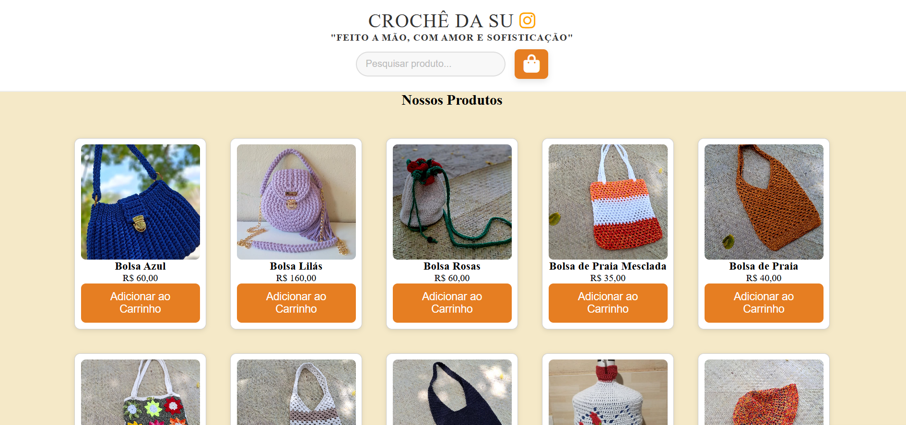

Giulia Carvalho
Início
Portfólio
Início
Portfólio
Meu Portfólio
Aqui estão alguns dos projetos de sites que unem funcionalidade e inovaçâo.
Cardápio para Pizzaria
Ver Projeto

Loja virtua de Croche
Ver Projeto